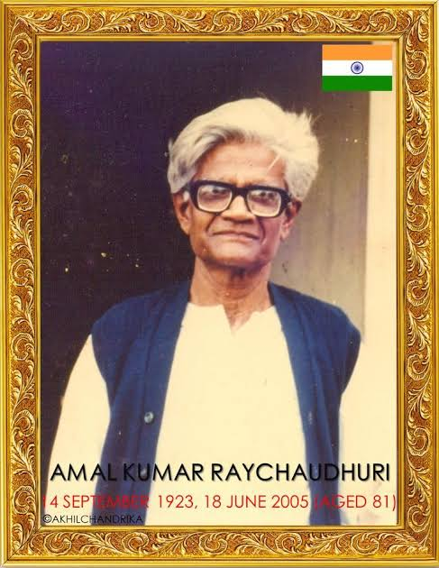

AMAL KUMAR RAYCHAUDHURI
Raychaudhuri equation
(14 September 1923 - 18 June 2005)

Amal Kumar Raychaudhuri (14 September 1923 – 18 June 2005) was an Indian physicist, known for his research in general relativity and cosmology. His most significant contribution is the eponymous Raychaudhuri equation, which demonstrates that singularities arise inevitably in general relativity and is a key ingredient in the proofs of the Penrose–Hawking singularity theorems. Raychaudhuri was also revered as a teacher during his tenure at Presidency College, Kolkata.
Career
- Raychaudhuri was born in a Baidya family coming from Barisal (now in Bangladesh) on 14 September 1923, to Surabala and Sureshchandra Raychaudhuri. He was just a child when the family migrated to Kolkata. He had his early education in Tirthapati Institution and later completed matriculation from Hindu School, Kolkata. In a documentary film made just before his death in 2005, AKR reveals that he was extremely passionate about mathematics right from his schooldays and solving problems would give him immense pleasure. He recalls in the documentary how his grade 9th teacher credited him for discovering a simpler solution for a mathematics problem. May be the fact that his father was a mathematics teacher in a school also inspired him. At the same time, as his father was not so 'successful' so to say, he was discouraged to take up mathematics, his first choice, as honours subject in college.
- He earned B.Sc. from the Presidency College in 1942 and M.Sc. in 1944 from Science College campus of Calcutta University and he joined Indian Association for the Cultivation of Science (IACS) in 1945 as a research scholar. In 1952, he took a research job with the Indian Association for the Cultivation of Science (IACS), but to his frustration was required to work on the properties of metals rather than general relativity. Despite these adverse pressures, he was able to derive and publish the equation which is now named for him a few years later. Raychaudhuri equation is a key ingredient in the proofs of the Penrose–Hawking singularity theorems.
- Some years later, having learned that his 1955 paper was highly regarded by notable physicists, such as Pascual Jordan, Raychaudhuri was sufficiently emboldened to submit a doctoral dissertation, and received his Doctor of Science degree at the University of Calcutta (with one of the examiners, Prof John Archibald Wheeler recording special appreciation of the work done) in 1959.
- In 1961, Raychaudhuri joined the faculty of his alma mater, Presidency College then affiliated with the University of Calcutta, and remained there until his superannuation. He became a well-known scientific figure in the 1970s, and was the subject of a short documentary film completed shortly before his death.
- In general relativity, the Raychaudhuri equation plays a significant role to explain the space-time singularities and gravitational focusing properties in cosmology. He aimed to address the fundamental question of singularity in the most simple and general form with no reference to any symmetry and any specific property of space-time and energy distribution.
- The first mention of the term'Raychaudhuri Equation' appeared in a research paper published in 1965 by George F.R. Ellis and Stephen Hawking. The Raychaudhuri equation[12] hit the zenith of fame as it was a key tool in the hands of young relativists like Stephen Hawking and Roger Penrose in the middle of the late 1960s in their attempt to answer the question on the existence of space-time singularities and to explain the theory of universe. In fact, this equation is important as a fundamental lemma for the Penrose-Hawking singularity theorems.
- There is such wide acceptability of this equation like other notable equations in physics like 'the Dirac equation and Schroedinger equation' that nobody cares about its origin or date of publication. The Raychaudhuri equation paved the way for later research into the singularity problem. It would find its place in venerable textbooks on general relativity and relativistic cosmology. The equation will stand firm so long Einstein's GTR stands. The equation remains a prime tool to investigate the behaviour of black hole horizons. One would wonder if there is any research work of such grade to have emerged in post-independent India.
Report
- He was elected member of the International Committee on General Relativity and Gravitation for the period 1974–83.
- During 1980–82, he was President of the Indian Association of General Relativity and Gravitation[13]
- He was elected Fellow of the Indian Academy of Sciences in 1982.
- UGC Emeritus Fellow from 1986 to 1988.
- He was elected Fellow of the Indian National Science Academy in 1987.
- Fellow of the National Academy of Sciences.
- Honorary Fellow of the Astrophysical Society of India
- Awarded Professor A.C. Banerji Memorial Lecture Award (1989) by National Academy of Sciences.
- Honorary Fellow of Inter-University Centre of Astronomy and Astrophysics, Pune.
- He was Indian National Science Academy Senior Scientist (1988–91).
- He was conferred Vainu Bappu Memorial Award (1991) by Indian National Science Academy.
- Honoris causa from Burdwan University, Kalyani University and Vidyasagar University.
- Honorary Visiting Professor, Jadavpur University, Kolkata.
Honours and recognition
- Classical Mechanics: A Course of Lectures
- General Relativity, Astrophysics, and Cosmology
- Theoretical Cosmology
- Classical Theory of Electricity and Magnetism: A Course of Lectures